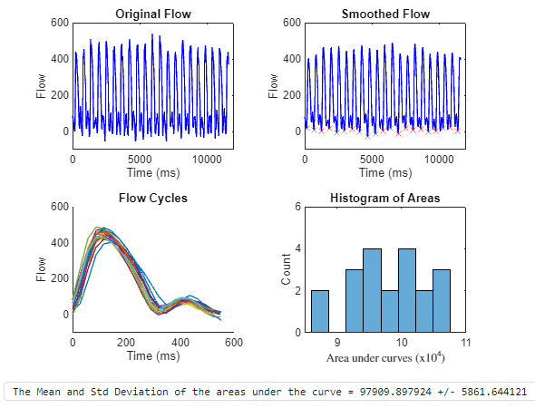

MATLAB · SIGNAL PROCESSING · NUMERICAL METHODS
MRI-Derived Cardiac Blood-Flow Analysis
A MATLAB pipeline to smooth left-ventricular flow measurements, identify individual cardiac cycles and compute the area beneath each cycle using trapezoidal numerical integration.
Objective
Using time-and-flow data obtained from a left-ventricular MRI study, the project aimed to visualize repeating flow cycles and estimate their areas. When appropriate flow and time units are established, the integral of flow over time can represent volume. The submitted report does not establish a verified conversion of its computed values into milliliters, so results are presented in the dataset's units.
Signal-processing workflow
Smoothing
Applied MATLAB smoothdata with a Gaussian method, timestamps supplied as sample points and a smoothing factor of 0.25.
Heartbeat boundaries
Detected prominent peaks and searched backward to identify troughs separating consecutive cycles.
Integration
Segmented cycles and applied trapz to flow-versus-time data, excluding incomplete boundary segments.
Visualization
Plotted raw and smoothed waveforms, overlaid cardiac cycles and a histogram of calculated areas.
Results

The report gives a mean area of 98,515.754379 and a standard deviation of 6,070.890172 in the input flow-time units. These values summarize the analyzed cycles; interpreting them physiologically requires a confirmed units convention and any relevant scaling.
Implementation
The code uses a main script and the functions processFlow, findTroughs, findCycles and displayResults. The per-cycle integration is:
for i = 1:length(cycle_times)
areas(i) = trapz(cycle_times{i}, cycle_flows{i});
endThe workflow illustrates practical use of numerical methods and programmatic data visualization. Future improvements could make peak thresholds adaptive and verify physical units before reporting stroke volume.